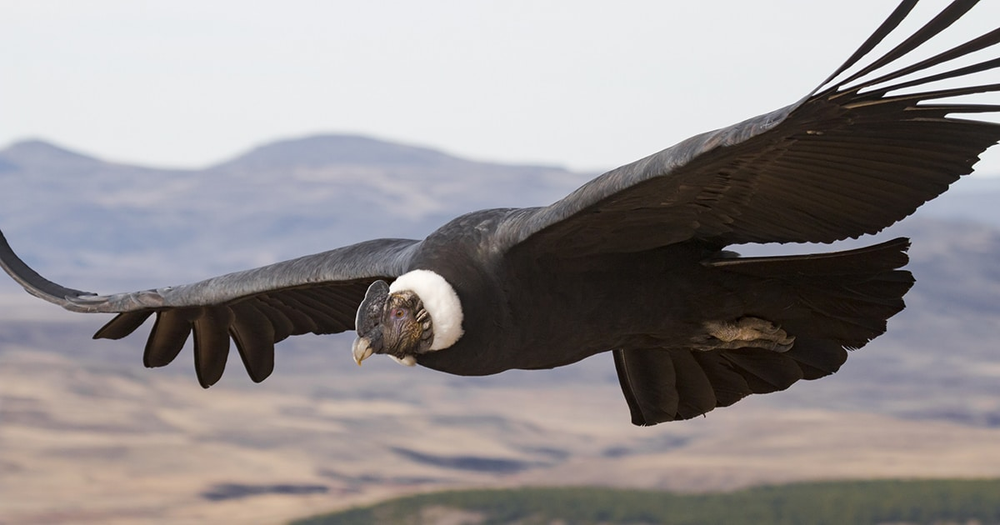

Animales en vía de extinción en Santa Marta y Colombia
Cóndor de los Andes (Vultur gryphus)
Descripción: El cóndor de los Andes es una de las aves más emblemáticas y está en peligro crítico de extinción. Su población ha disminuido drásticamente debido a la caza y la pérdida de hábitat.
Importancia: Es un símbolo nacional de Colombia y juega un papel vital en el ecosistema como carroñero.
